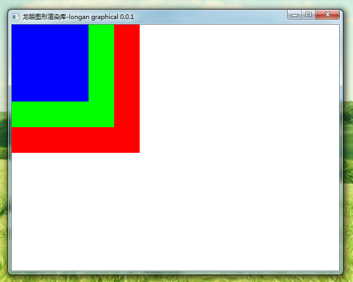

关于：
这空间龙眼官网2020年1月8日，空间龙眼正式成立。
联系：
豆焰电子邮箱：beanflame@qq.com
空间龙眼 GitHub：https://github.com/space-longan/
空间龙眼 Gitee：https://gitee.com/space-longan/
空间龙眼官方QQ群：780414678
Space Longan Renderer是什么：
Space Longan Renderer是免费开源的C/C++的图形渲染绘图库（软渲染库）、支持跨平台
这C/C++编译环境的平台中，包括windows端、Linux端环境中。
Space Longan Renderer 使用支持 Windows、Linux
Space Longan Renderer 最终将渲染一个RGBA(32bit)的图形缓存（显存）。
window系统图形库支持：


构建空间龙眼...
没有什么~....
Space Longan Mirror是什么：
因为国内开发环境下载速度问题，所以我搭建了一个空间龙眼镜像站。您在国内可以快速的下载开发环境。我会及时更新依赖库。
空间龙眼镜像问题：
如果问题仍然存在，请与网站管理员联系。
如果本仓库无法正常使用，请提醒我，我会尽快修复。
联系：
空间龙眼镜像站官方QQ群：788907390
空间龙眼镜像站Discord群：https://discord.gg/FmVPsapuEk
Gradle Wrapper加速：
使用 Gradle Wrapper 的时候，会从Gradle官网缓慢地下载 Gradle Wrapper。
借用腾讯镜像的Gradle Wrapper下载就挺快的。
加速方法:
打开项目中的 gradle/wrapper/gradle-wrapper.properties 文件：
将 services.gradle.org/distributions 替换成 mirrors.cloud.tencent.com/gradle
更新日志：
2021-1-7 添加 GradleWrapper 镜像
2021-4-4 服务器过期时，移除龙眼镜像的GradleWrapper镜像。
你可以借用腾讯镜像的GradleWrapper镜像。
2021-7-10 空间龙眼镜像 最终结束！已经不能使用。
2021-7-10 我们转到空间龙眼加速器。这玩意能用空间龙眼加速器的代理+官方源下载最快。
2021-7-12 发布空间龙眼Forge插件
豆焰的博客：https://blog.beanflame.cn/
钛山的博客：https://tysontan.com/
小熊猫Dev-C++：https://royqh.net/devcpp/
DashGL：https://dashgl.com/
XEGE绘图库：https://xege.org/
Easy2d轻量级游戏引擎：https://easy2d.cn/
Kiwano游戏引擎：https://kiwanoengine.com/